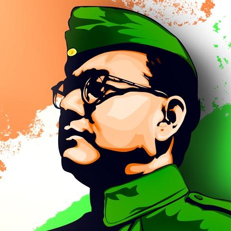
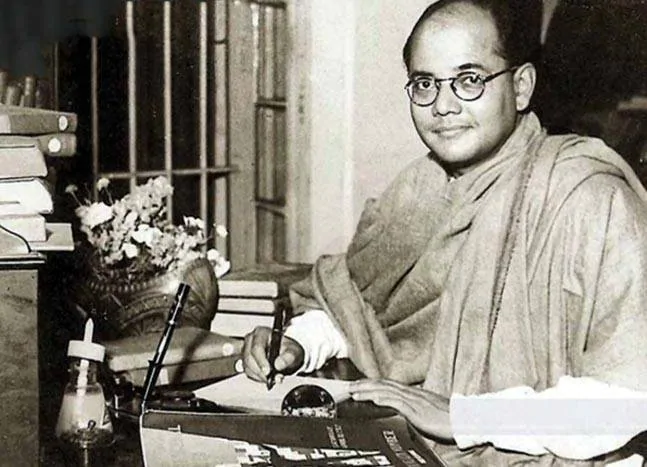
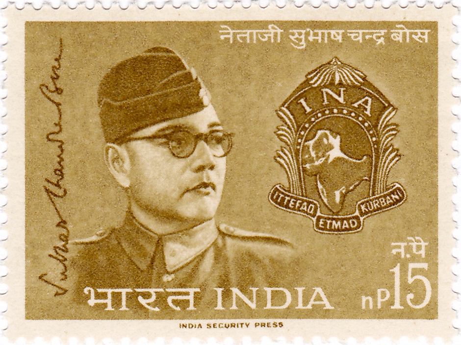

TRIBUTE TO OUR NATIONAL HERO: Netaji Subhash Chandra Bose
"The freedomfighter who inspired the world"

Subhash Chandra Bose is fondly remembered as one of the greatest freedom fighters of India, and popularly known by the name of 'Netaji'(Respected Leader). He was strongly influenced by Swami Vivekananda’s teachingsand also believed that the Bhagavad Gita was a great source of inspiration for the struggle against the British. His life is a story of struggle.It is the story of a young dreamer that tells the saga of consciousness,struggle and success in every eye; one who does not accept anything for free and if he wants freedom, he is ready to spill his blood. Thousands of people sacrificed their lives on Netaji’s call.He created an army against the British in no time. Not only did he embrace the freedom movement wholeheartedly, but also became an inspiration for freedom. The leader spearheaded the revolutionary Indian National Army during World War II. He always pitched for complete and unconditional independence of India from the British Rule. Not only did he embrace the freedom movement wholeheartedly, but also became an inspiration for freedom. With the slogan “Give me blood and I will give you freedom”, he started preparing to awaken the country. Such was the charisma of his philosophy and personality that whoever listened to him was attracted to him.

